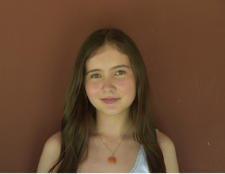

Laura Speirs

Hi! I'm Laura. I study Philosophy, Politics and Economics (PPE) at the University of Oxford (Corpus Christi College). I have lived in five countries across Asia, the Pacific and Africa, in addition to my two home countries, the UK and France.
My academic interests span geopolitics, macroeconomics, international development, financial markets, and quantitative research. At Oxford, I particularly enjoyed using quantitative methods to answer a research question. I analysed European Social Survey data in R using linear regression, finding that hostility to immigration is best explained by cultural rather than economic concerns.
Alongside my studies, I hold multiple committee roles. I'm Head of Marketing for the Oxford Politics Society, where I communicate with an audience of over 3,000 followers and interact with companies to secure sponsorships. I'm also College Representative for Oxford Law Society, where I serve as the liaison between Corpus Christi College and Oxford Law Society, promoting events and opportunities. I'm also International Student's Officer at my college, where I organise cultural events for over 80 students, managing a budget of over £3,000.
Prior to university, I interned at LuxDev (Luxembourg Development Cooperation Agency) in Laos, where I worked on justice and governance projects. I have also interned at Arts4Refugees, where I researched and wrote articles on post-conflict communities and refugees.
Outside of university, I enjoy reading translated fiction and watching international films. I also enjoy running, competitive swimming, and scuba diving. I'm also learning Mandarin and Spanish.
Q-Step I (Quantitative Research)
I analysed European Social Survey data in R using linear regression to test whether hostility to immigration is better explained by cultural or economic concerns. The quantitative analysis found that negative attitudes towards immigration are primarily caused by perceptions of cultural rather than economic threat.
Arts4Refugees
I researched, wrote, and published articles on post-conflict communities and refugees as a Citizen Journalist for Arts4Refugees.
Oxford Politics Society
As Head of Marketing, I manage social media accounts with over 3,000 followers. I create content to promote our events.
Oxford Non-Law Into Law Society Moot
I reached the semi-final. I researched case law and developed written and oral arguments on the application of the Human Rights Act 1998.